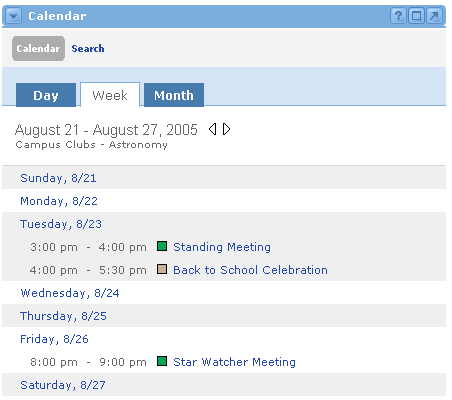

Groupware Calendar Channel
Looking for more help options? Click Here
The Offering Calendar
 to an Offering Calendar
to an Offering Calendar
Calendar Search:Locating Events
The Calendar channel located within the Groupware Tab is a calendar dedicated to the specific offering. The current offering is always highlighted in the Navigation Channel. This channel is for offering sponsors to list important events for users within the offering. Users generally cannot add or edit events in this calendar; however, they can link to these events from within their own personal calendar channel outside the Collaborative Groupware.
The default view displays the current month, which allows the user to navigate between months or to a particular date. Selecting a date opens the event view for that date from which the user can view events, add/edit or delete events (if permissions apply). The left side of the channel shows the current month. To view a different month, use the arrow icon next to the month navigate to previous or future months.

Detailed Month View
To display the focused version of the monthly calendar, click the Month tab within the calendar channel.
This will display a focused view of the selected month. To navigate to future or previous months, you may use the arrow icons next to the month currently being displayed. To navigate directly to a specific month select the desired month and year from the drop down boxes and click Go.
Users who have the appropriate permissions to add events can do so by clicking the Add icon for any specific day. If no permissions are available, the Add icon will not appear.
All users can get a focused view of a specific day by clicking the date. If any events have been created, users can view those events by clicking the event title.

Detailed Week View
To display a focused view that details a specific "weekly" view of the calendar, click the Week tab within the calendar channel.
To navigate to future or previous weeks, you may use the arrow icons next to the week currently being displayed.
Users who have the appropriate permissions to add events can do so by clicking the Add icon for any specific day. If no permissions are available, the Add icon will not appear (as in the screenshot below)
All users can get a focused view of a specific day by clicking the desired date. If any events have been created, users can view those events by clicking the event title.

Detailed Day View
Clicking on any of the dates in the small monthly calendar will bring up a "daily" view with specific hour-by-hour information for that date. Users can access this daily view in two additional ways, by clicking on any specific date from within the focused monthly view, or by clicking on any specific date from within the focused weekly view (both views were described in the previous sections of this lesson.)
Users who have the appropriate permissions can add events by clicking on the Add icon for a specific hour. If any events are listed on this day, they can be viewed and/or edited by clicking on the Event Title, or they can be deleted by clicking on the Delete icon. If no permissions are available, these icon will not appear.

To add a calendar event, simply click on any of the Add icon buttons on the Offering Calendar channel. If these buttons do not appear, then the logged in user does not have permissions to add events.
The Add New Event screen consists of three parts:
- New Event - Input the event details here.
- Event Attendees - Send notifications to all users enrolled in the offering regarding the event.
- Event Recurrence - This section makes it easy to repeat this event many times in the future, based upon a regular schedule.

New Event Section
- In the Add Event section, first give this event a name in the Title text field.
- Make sure the Date fields are correct (month, day, and year).
- Choose a Time, or select All-Day if this is event will take place all day.
- Enter the Place where the event will occur.
- For the Category field, there are many choices (i.e. Appointment, Meeting, Holiday, etc.). Select the one that best applies to this event.
- For the Priority field, there are several choices, ranging from Very Low to Very High. These priorities each come with a color-coded box that appears next to each event on the calendar date views.
- If there are any extra notes about this event, enter them on the Notes text area at the bottom left of the channel. You have the option to Spell Check content entered in the notes section.
Event Attendees Section A notification can be sent to users enrolled in the offering in the form of an email or a message in the Notifications channel. Simply check the box(es) for the desired type of notification. |
Event Recurrence Section The next thing that needs to be determined is the Recurrence Pattern of this event (if any).
|
To search for scheduled events, simply locate the Calendar channel and click the Search link located at the top of the channel. The following Search screen will be displayed:

To perform a search, simply follow these steps:
- Enter the search text in the Find field.
- Now select which field of the Event that this search should take place: Title, Place, and/or Notes. You can search in more than one place.
- Choose a Category for your search (if desired).
- To refine the search to a specified time span, enter the dates in the From and To fields.
- The Calendar field will default to the title of this offering. No other selection options will be provided in this view.
- Click the Search button to begin the search.